Psychedelic Grasshopper Cheesecake
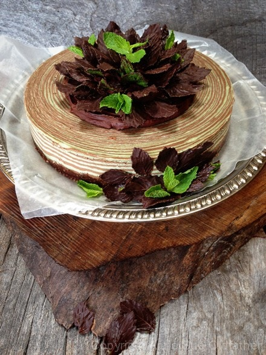
~ raw, vegan, gluten-free ~
A few weeks back was asked by one of my readers to come up with a raw version of Grasshopper Pie. I took the challenge without even knowing exactly what was a Grasshopper Pie! *smacks forehead*. That’s OK though because Google is my friend and I love to learn new things. But it can be difficult creating a raw version of a cooked dish when you don’t even know what the taste and texture are supposed to be. This is where my late night research comes in handy.
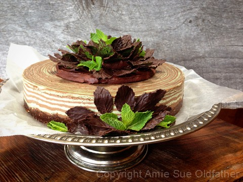
My research lead me to the understanding that we are basically dealing with mint and chocolate. Well, shoot, that didn’t sound so hard. The pie dates back to around the 1950s in the United States and may have been inspired by a drink called the grasshopper developed about the same time. I then read that the chiffon pie was usually made with a cookie crust. Ok, mint is for the main body of the pie…. wait a second… hold the boat… what is a chiffon pie? For starters, a chiffon pie is also known as a Fairy Tart. Hmm, Grasshopper Fairy Tart? Stay focused Amie Sue…
Chiffon pies were often a combination of whipping cream, gelatin, sugar, eggs, and flavoring. Well, I am not going to use whipping cream (maybe creamed cashews would work) , gelatin is out (maybe I can try coconut oil as the emulsifier), I am so not going to use refined sugar (but I bet raw agave would be perfect), eggs (just not needed here) and flavorings (?)… this is a good place to introduce raw cacao and fresh mint! This is basically how my mind works when it comes to creating new recipes. I break down each ingredient by writing down the raw ingredients that can possibly mimic the role or flavor of a processed ingredient. I then take textures into consideration, then how to get the right colors and finally work out the measurements needed.
Now that I got that part down, I wanted to add a little pizzaz to the pie. This was going to be a special birthday recipe and part of a raw food class I was teaching so I wanted it to be stunning. Many non-raw food eaters were going to be there and I wanted them to have an amazing experience. Not long ago I stumbled upon a Japanese recipe site that I wasn’t able to translate into English but this chef made a baked cake using a stripping technique (zebra stripes). The chef didn’t post many pictures of the process but the two photos that were there was just enough to get the wheels rolling. The stripes in the baked cake were really wide, maybe 3-4 rings. But once again, I had to elevate the process. Rather than using 1/4 – 1/2 cup at a time of each batter, I used 1 Tbsp. lol Quite a difference, but the results were stunning. I can see a lot of new creations coming up in the future for sure.
Ingredients:
Yields 9″ Springform pan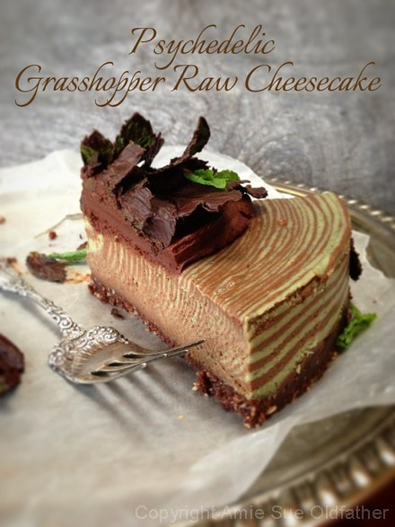
Crust:
Base batter: yields 4 cups
- 1 cup baby spinach
- 1 1/4 cups water, for blending with spinach
- 3 cups cashews, soaked 2+ hours
- 3/4 cup raw agave nectar
- 1 Tbsp fresh lemon juice
- 1 Tbsp vanilla extract
- 1/4 tsp sea salt
Mint batter:
- 2 cups base batter, from above
- 3/4 cup fresh mint leaves
- 1/2 cup coconut oil, melted
Chocolate batter:
- 2 cups base batter, from above
- 1/2 cup raw cacao powder
- 1/2 cup coconut oil, melted
- 2 Tbsp raw agave nectar
Preparation:
Crust:
- Place the Medjool dates in enough hot water to cover them. Set aside. This will add more moisture to them so they blend well into the crust mixture.
- In a food processor, fitted with an “S” blade, combine the almonds and walnuts. Process until they break down to small crumbles.
- Add cacao powder, salt, and pulse together.
- Drain the soak water out of the dates and squeeze out the excess water.
- Open the food process and place the dates all around the bowl. Replace the lid and process until the crust mixture starts to stick together. When you pinch the batter it should stick together. If it is too dry you can add 1 Tbsp of water at a time till it sticks together.
- Scatter the crust batter around the bottom of the Springform pan evenly. Then start pressing it down firmly and evenly. Clean up the edge of the crust, as this will be seen when the pan ring is removed. Set aside while you make the filling.
Batter / filling:
- Place the spinach and water in the blender and blender until the spinach has broken down. Strain through a nut bag to remove any pulp fragments. Discard the pulp. Pour the spinach water in the blender.
- After soaking the cashews, drain and rinse then add to the blender along with the agave, lemon juice, vanilla, and salt. Process until creamy. This can take 2-5 minutes, depending on your machine. Once this is creamy and smooth, remove 2 cups of the filling.
- Mint batter:
- Add to the 2 cups of batter, mint leaves, and coconut. Blend until creamy. Pour into a small bowl. Rinse the blender container.
- Chocolate batter:
- Add the remaining 2 cups of batter and combine with the cacao powder, coconut oil, and agave. Blend until creamy. Pour in a small bowl.
Assembly:
- Place in front of you; pie crust, both bowls of batter (green and brown), with a tablespoon measurer in each bowl. Sit down and relax through this process.
- Start with 1 tablespoon of chocolate filling and place it in the center of the crust. Don’t spread it out, just let it pour out of the measuring spoon.
- Next, scoop up 1 tablespoon of the mint batter and pour it into the center of the brown filling that is in the pie crust.
- Now, alternate 1 tablespoon at a time until all of both batters are gone. Don’t tap the pan through the process, just let gravity do all the work.
- If you do not want as many rings just use a larger amount of batter for each ring ( 2 Tbsp, 1/4 cup etc.)
- Finally cover with plastic and place in the fridge overnight to firm or in the freezer for at least 6 hours.
- Remove and decorate. This pie will keep for 3-5 days in the fridge or safely 1 month in the freezer. Keep well covered.
Decorating Ideas:
I placed about 1/2 of a recipe of chocolate ganache in the center of the pie. I didn’t cover the complete pie because I wanted the rings to show. I then made a batch of hardening chocolate and with a small craft paint brush, I painted chocolate on the back side of fresh mint leaves. If you make these, let them harden before moving them on to the pie.
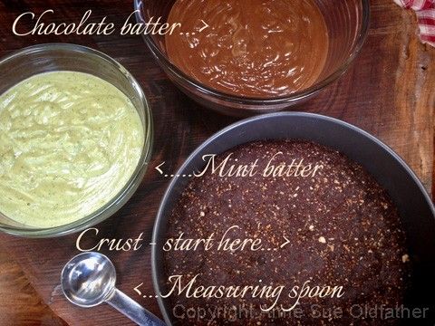
Here we go…. remember to alternate batter colors and just let gravity do the spreading.
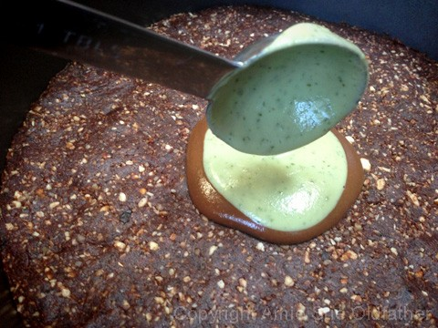
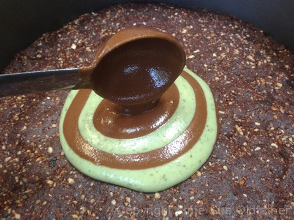
Shew, about half way done! You can do it! Stick with me here!
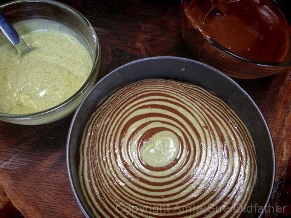
There we go! 80 rings later! Impressive.
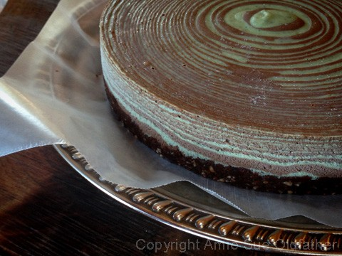
Now, start to decorate. Again, I used some ganache in the center to create a base
for my chocolate painted mint leaves.
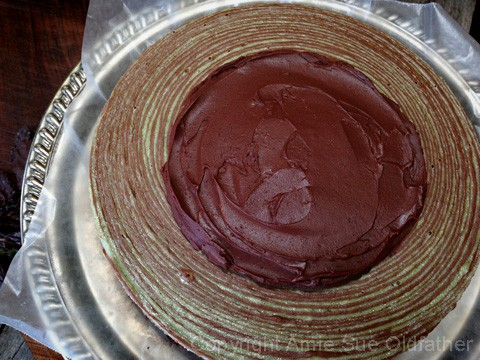
Create a ring of leaves.
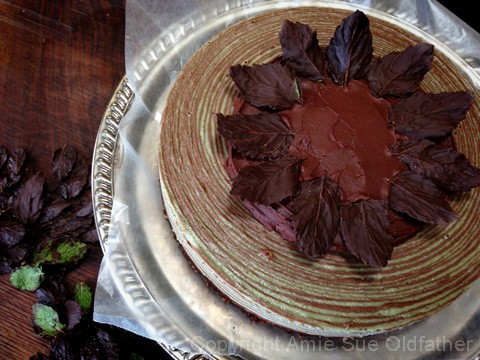
Pipe a little ring of ganache over the ends of the leaves. This will anchor them down
and also create a holding spot for the next layer of leaves.
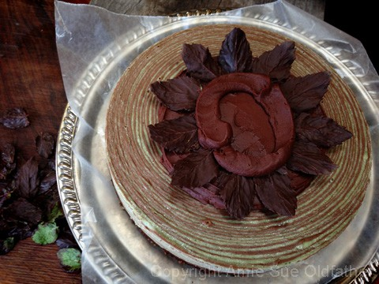
When you make each additional ring of leaves, alternate them with the layer underneath.
Also, as you gently press the ends of the leaves into the ganache, you can put them in at
different angles so that you build volume and texture.
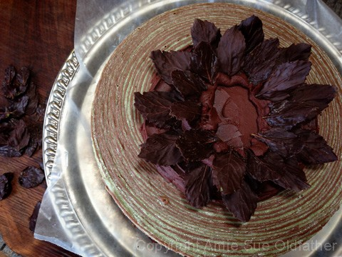
Pipe more ganache into the center, again anchoring down the last ring you created.
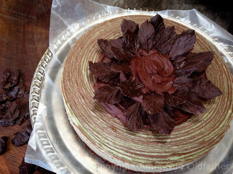
Fill the center with leaves.
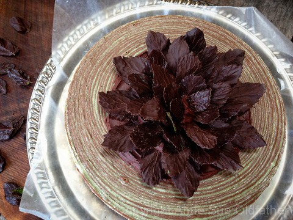
I had some extra, so I created a small decoration with them at the base of the pie.
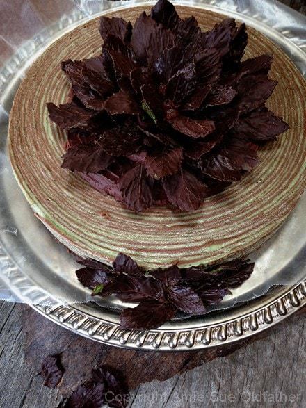
Right before serving, I poked some fresh mint into the decorations. This
small amount of green really made the colors in the rings pop. Place the mint
on the pie right before serving. Mint likes to wilt as it sits.
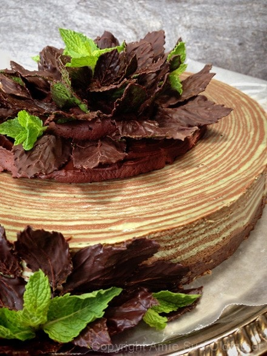
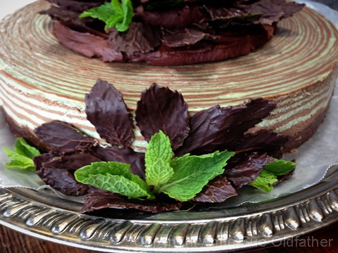
© AmieSue.com